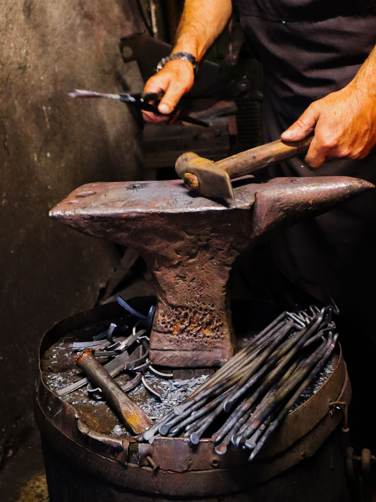
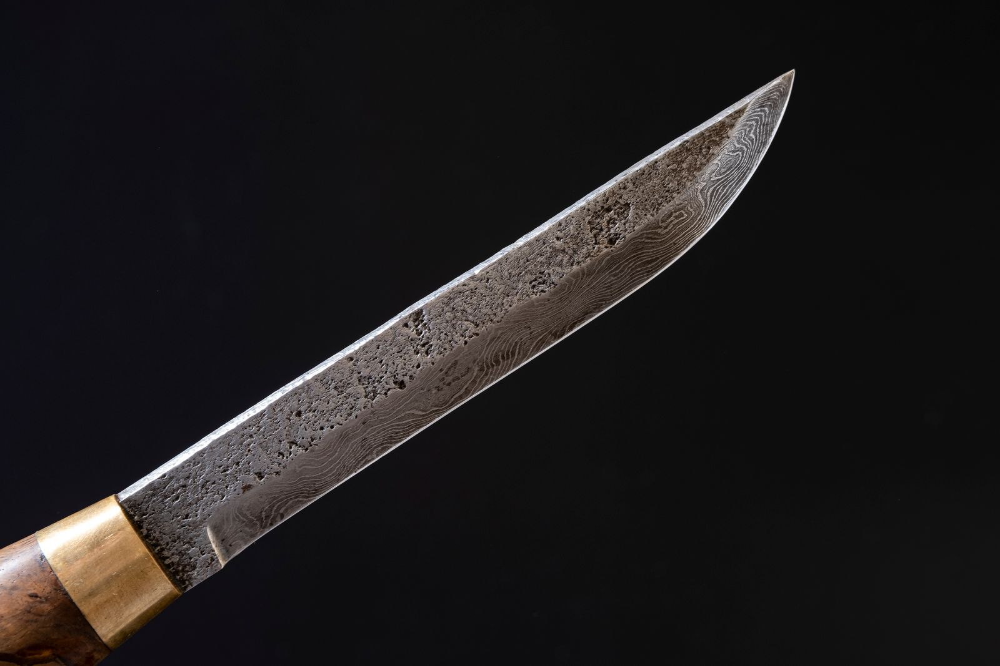
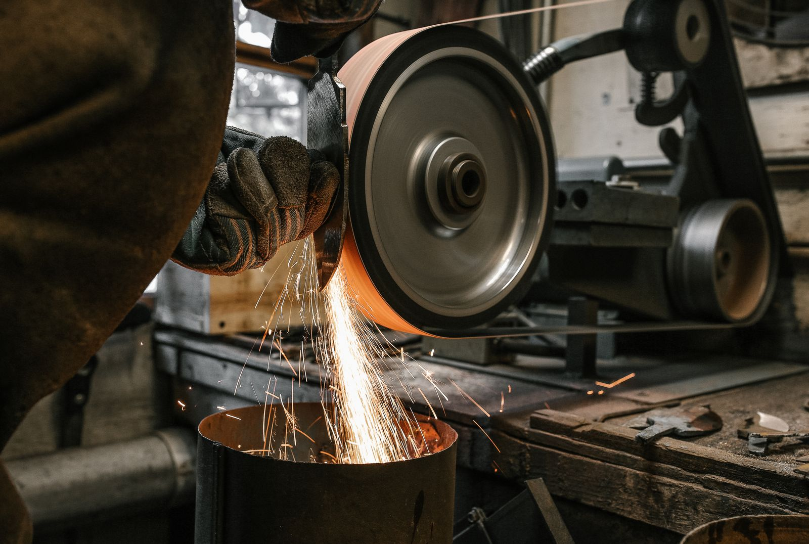
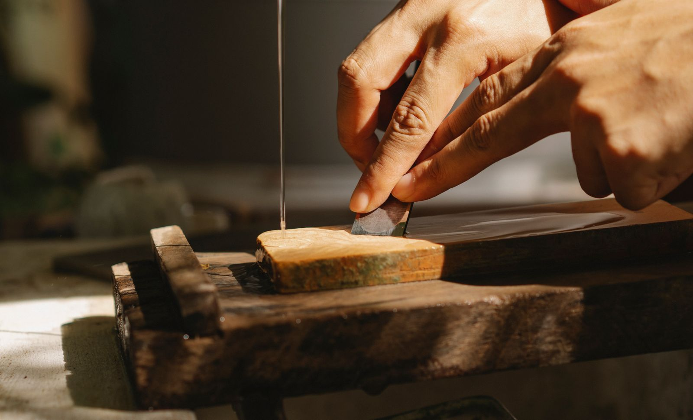

No. 41 — Cook's knife, 210 mm
- Steel 80CrV2 carbon
- Hardness 60 HRC
- Handle bog oak
- Weight 187 g
€515Available
Master bladesmith · Solingen, Germany
I am Lukas Brenner. From the first week of September, when the game season opens, every kitchen within fifty kilometres suddenly remembers its knives — and my order book fills with cook's knives, cleavers and carving sets that have to work every service, not pose for photographs. This page is my spec sheet: the steel, the hardness, the weight, the price. All of it printed, all of it checkable.
Every year a new stainless wonder-steel arrives with a hardness number like a lottery prize. A cook does not need a lottery prize. A cook needs a carbon blade at 60 HRC that takes an edge on a steel in the middle of service — in minutes, not on a stone for an hour on his day off.
The 210 Cook's Knife — full specification

Finished blades, ready this week.
Prices follow the same tables as commissions — check them below.



The tables are the price list. The planner does the same sums I do at the bench — nothing hidden, nothing estimated later.
| Blade | Length | Base price | Forge queue |
|---|---|---|---|
| Paring knife | 90 mm | €190 | 3 weeks |
| Utility knife | 125 mm | €300 | 4 weeks |
| Petty knife | 150 mm | €260 | 4 weeks |
| Cook's knife | 180 mm | €390 | 5 weeks |
| Cook's knife | 210 mm | €440 | 6 weeks |
| Bread knife, serrated | 230 mm | €420 | 5 weeks |
| Cook's knife | 240 mm | €490 | 6 weeks |
| Cleaver | 175 mm | €380 | 5 weeks |
| Carving set (knife & fork) | 210 mm | €620 | 7 weeks |
| Steel | What it is | Added |
|---|---|---|
| 80CrV2 carbon | The workshop standard. Tough, fine-grained, hones fast on a steel. | included |
| 1.2842 (O2) carbon | The old Solingen tool steel. Keen edge, forgiving in the quench. | + €25 |
| 52100 carbon | Bearing steel. Holds a working edge longer between hones. | + €45 |
| AEB-L stainless | For kitchens that cannot dry a blade after every cut. Still honed by hand. | + €60 |
| Handle | Notes | Added |
|---|---|---|
| Ash | Local, light, takes a knock. The working default. | included |
| Walnut | Warmer in the hand, oiled finish. | + €30 |
| Bog oak | Oak that slept in a peat bog for a few thousand years. Dark, dense, finite. | + €75 |
| Antler | Shed red-deer antler, collected not culled. No two alike. | + €95 |
Pick a blade, a steel and a handle. The total and the ready date come straight from the tables above.
Prices include VAT and insured shipping inside Germany. A commission is booked with a 30% deposit; the balance is due when the blade is photographed finished and ready to ship. If I miss my own ready date by more than a week, the deposit comes back in full — that has happened twice in nine years, both times a furnace fault.
Every commission crosses all five. The numbers are the ones I work to, not advertising.
The blank is forged at 1,050–1,150 °C, close to final shape. Three normalising cycles follow, so the grain the quench will freeze is fine and even.
Profile and bevels are ground before hardening, leaving the edge at 1 mm. Grinding a hardened blade thin is how makers cook the temper out of the edge; I do not do it.
80CrV2 is austenitised at 830 °C, quenched in warm oil, then tempered twice at 200 °C. The target is 60 HRC — checked on a Rockwell tester, on the tang, on every blade. The reading goes in the order book.
The tang is bedded, pinned and shaped by rasp and scraper. No handle leaves until it has been held wet — a kitchen grip is a wet grip.
The finished edge is ground to about 15° per side, thin behind the edge, then honed on a 3,000-grit stone and stropped. It should shave a tomato skin by weight alone; if it does not, it goes back to the stone, not into a box.
Saturdays, six places, €185 per person. Full safety rules on The Smith page.
On a forge day you make a 125 mm utility knife: forge the blank in the morning, grind and harden it after lunch, fit a simple ash handle and take it home sharp the same evening. Eye protection is worn from the first minute, gloves come off at the grinder, and nobody works tired — the forge closes for coffee at eleven whether the steel is ready or not. Six places, never seven; the seventh person is the one nobody is watching.
Six knives and a fork in 80CrV2, matched bog-oak handles, delivered over two months for the game season. One year on: two re-hones, no chips, and the bread knife is the most borrowed tool in the building. Read the full job.
“Lukas wrote the hardness on the invoice. I thought it was theatre. Then my sous-chef dropped the 210 onto quarry tiles in the middle of a Friday service — the edge rolled, it did not chip, and it was back on the steel in four minutes. That is the whole review, really.”